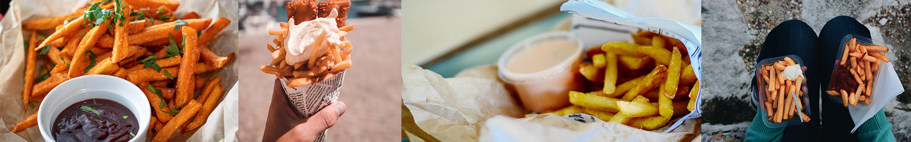

Global Fries
Today's Locaiton: 75 State St. Boston, MA
About US
Request A Location
Event Booking
< end navigation placeholder>
Get cultured from the convience of a resturant on wheels
Daily Classics
- Fries & Ketchup
- Truffle Parm
- Sweet Potato
- Cajun
Main Menu
- Poutine
- Togarashi Fries
- Iceland w/cocktail sauce
- Philippines w/Banana Ketchup
- Sauces: Ketchup, Ranch, hot sauce, garlic aioli
- Bottled Beverage

Global Fries is a Boston based food truck that regularlly changes up our menu to provide a global taste palette. We combine our passion of french fries with influences from globally sourced flavors, spices and sauces. Except for crinkle cut...they are the worst!
Order Ahead
By ordering ahead you skip the line just like we skip crinkle cut!
Order Now
Weekly Schedule
- Wednesday: 75 State St. Boston, MA
- Thursday: 75 State St. Boston, MA
- Friday: Night Shift Brewer, Evert
Book us for your personal or corporate event by contacting: anthonytourville@gmail.com